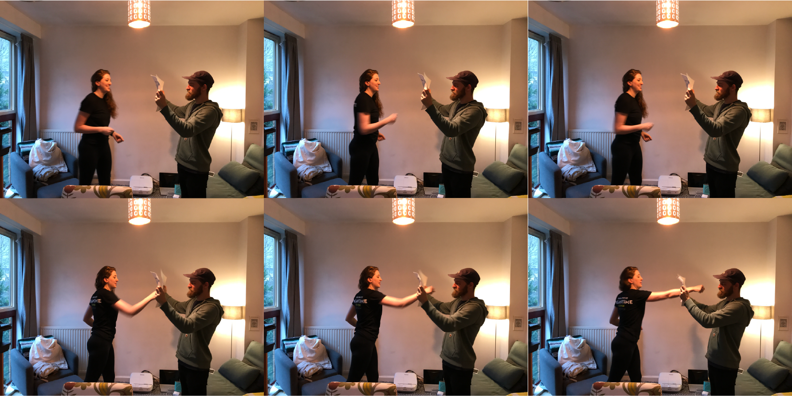

Kicking like a girl
2019 / MA dissertation project
Since I was a kid, the world around me kept telling me how fragile, how limited my body is because I was a girl. Regardless of the fact about the female body strength, I learned not to trust my body, even though I was practising taekwondo for quite a long time. I eventually had to leave taekwondo when I was 15, and it was much later, in 2018, that I picked it up again. And this is where I start my project. This is a project that explores how the society keeps telling women that they are weak from young age, and as a result, how easy it is for women to be distant from any physical activities and how that acts as a self-fulfilling prophecy that deepens the gap between male and female body and contributes solidifying gender stereotype which is a mere illusion, a performance that we all learn to play.
Iris Marion Young, in her essay ‘throwing like a girl’, describes female comportment using the words timidity, uncertainty, and hesitancy. She says that we lack an entire trust in our bodies to carry us to our aims.
Some people say that this is how women ‘naturally’ are, that we are much more careful, timid, and incapable by nature, and that is just the fact. Young’s point in her essay is that the tendency that’s described earlier shows as a result of the female body being overlaid by immanence, and our intentionality being inhibited, which means that we always have that inner voice that says ‘ I cannot.”
We learn how to act like a ‘girl’ from a young age. JeongMee Yoon shows how big the influence of the society that we’re living in has on how we learn how to act in certain ways. Judith Butler says That gender is a construction that conceals its genesis, and punish those who are not agreeing to believe in them. It is not surprising that both this inner voice and society makes women ‘shrink’ both mentally and physically, taking less spaces. And Alex Channon argues that mixed-sex martial arts can ‘undo’ the gender as men and women are competing and practising as an equal. But in my opinion, because martial arts are not completely detached from the social rules, simply mixing up men and women in the same space won’t be enough. And in some cases, women feel much more comfortable and confident when practising with each other.
So far is the content of my presentation in a conference at the University of Vechta in Germany that happened in early October about martial arts and physical education. Apart from it being a chance for me to start my research earlier time in the summer, I was really scared and nervous because I have never participated in a conference before, not to mention deliver a presentation in one. But I thought it was a good execution of what I was trying to say through this project that I go there and occupy that space and time slot.
I conducted preliminary research in my taekwondo club with questionnaire papers asking the expectations behind the intention of sending their children to the club, and among other things, I noticed the demand for self-defence from the parents of girls are high. Self-defence is an interesting area when you’re doing combat sports and martial arts, because it technically doesn’t belong to certain discipline and there is no rule or ‘playing it fair’. There are different ways of doing things but what works for you works. Self-defence gets to be used only when something happens, but if you don’t know how to, you can’t use it. While martial arts are usually considered to be ‘masculine’, even though actually half of the martial arts population is female, self-defence Is usually related with women, and I found women, in general, are very interested in learning these skills.
After the conference I continued my research through a one day workshop, I got help from two amazing women from my taekwondo club and held a one-day self-defence workshop. In the workshop, we covered how to punch, how to use combinations of different skills, how to get out of wrist grab, collar grab, and hair grab and so on. For me, it was almost touching how enthusiastic every participant was and how serious they took it. I asked them to write about their experiences, and one of the participant reflected on how she had to stop her physical discipline, equestrianism, which she maintained for many years, due to the demands of work. While saying that this workshop reminded her how important feeling strong is and also purposeful in that strength, she wrote she “loved being shown how capable she is in defending herself, if she just know how to use her body correctly. It felt empowering, and was much easier than she thought.” Also she sensed that she hasn’t shown her usual signs of anxiety - “scratching, picking, hair pulling and obsessive body rubbing.” Also on the presence of other women in the room, she states she was “acutely aware” of them, and that it made her feel good to learn movements that weren’t familiar to her, and how it felt natural and enjoyable.“ An interesting thought, is that she actually felt very womanly. She says it comes through connecting to her core energy, thinking through scenarios where she need to show assertiveness, knowing that she is not a victim under any circumstances and she can make decisions about defending herself should the need arise,”
And many other responses shared a similar sentiment, a lot of them talking about how nice it was to feel capable with their body.
I also did some visual exploration on moving the female body in space by taking long exposure pictures of myself practising taekwondo In open space. It was also different from my usual taekwondo practise which usually takes place in an indoor space, with other practitioners with me, wearing a certain type of clothing. Though I was a little reluctant at first, I enjoyed the experience and decided to carry on testing the idea of including the movement of one’s body as a mean of communication. This was also of interest of mine as an interaction designer. I felt it was the right direction to go, giving chance to the public of participation or engaging with the work I design. I could find a more refined explanation about the possible link between my practice as an interaction designer and the attempt to understand and broaden the female comportment through taekwondo, based on Henrieta Helena Maria’s thesis on Human computer Interaction and physical discipline, using dance as an example. The abstract for her thesis starts as such: Embodied Interaction continues to gain significance within the field of Human-Computer Interaction (HCI). Its growing recognition and value is evidenced in part by a remarkable increase in systems design and publication focusing on various aspects of Embodiment. The enduring need to interact through experience has spawned a variety of interdisciplinary bridging strategies in the hope of gaining a deeper understanding of human experience.
All the researches and conversations I had so far clearly showed that this is a much bigger tendency rather than a singular experience of mine, so I started asking people of their experience on undermining of the female body either by other people or from themselves. One woman told me that she used to love travelling alone, but her radius of action shrank after being told multiple times ‘that place is too dangerous for you to travel alone’ and reading news articles about the things that happened to women in various parts of the world. One of her male friends told her that ‘learning self-defence is no use. You can’t beat a man if he decides to use force on you’ when she told him that she went to a self-defence one day class. Someone else me that their parents didn’t allow them to go to taekwondo club because they were girls, One other woman told me that when she went to a game centre as a young girl and play fighting games, boys used to come to fight her because they assumed she won’t be good at it because she was a girl. There was also a story from other woman on how her parents keep telling her that she should have been born as a boy because she is ‘too loud, having fights with other people all the time’, not to mention the common story of being scolded because she was not sitting ‘properly’ with her legs closed.
I made a paper prototype of this experience, writing down these stories on a piece of paper and punching through it.
And based on these, I made an interactive installation for the public program that the public can come and share their story and break the projection of it on the floor with the body that was undermined at that time, and make the space that they are standing a bit wider.
Looking back, researching for this project helped me with clarifying the vague doubts that I had on the femininity projected on me and gave me words to describe it, and being able to describe what was wrong with the imposed gender role in clear and structured words was an empowering experience. Also seeing that this experience of keep being underestimated as someone who’s living with female body is something that’s shared among many other women was reassuring and encouraging even though it still means that we have so many issues that we need to work on because it also means now I can address this issue as a tendency, not a singularity.
You can read my publication here.